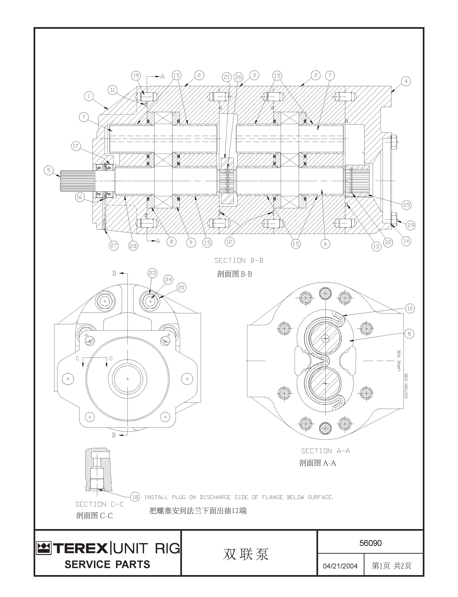

双联齿轮泵 · DOUBLE GEAR PUMP
Общие сведения
Подъемный насос представляет собой большой двойной шестеренчатый насос, который соединен последовательно с более маленьким рулевым поршневым насосом. Насосы подъема устанавливаются на лонжероне рамы и специальном кронштейне спереди над коническим подшипником.
Управление
Основной принцип работы насос подъема:
Масло подается в насос через всасывающий патрубок бака и направляется во всасывающую камеру насоса между зубьями шестерен. При вращении шестерен, масло под действием их тягового усилия направляется в напорную камеру и через выходной патрубок выбрасывается из насоса. Износоустойчивая пластина объединена с корпусом насоса в единое целое, что позволяет увеличить объем герметичной части и работоспособность.
Техническое обслуживание и осмотр
Периодическое техническое обслуживание включает следующие виды работ:
ПРИМЕЧАНИЕ: Кроме периодического осмотра насоса для поддержания требуемого давления и расхода не требуется обслуживание или регулирование внутренней части насоса.
1. Убедиться в надежном креплении всех компонентов и всех установочных болтов.
2. Проверить насос подъема на наличие износа, утечек или повреждений. Отремонтировать или заменить по мере необходимости.
3. Визуально проверить кронштейн крепления насоса подъема, тщательно проверить амортизационную подушку на наличие ослабления, старения или повреждений. Отремонтировать или заменить по мере необходимости.
4. Сохранять требуемое расстояние от передней поверхности кронштейна насоса (это не представляет собой монтажную поверхность насоса) до поверхности соединителя привода насоса (расположенного позади основного тягового генератора переменного тока). Если это не так, то следует отрегулировать все кронштейны в соответствии с порядком установки данного модуля.
5. Проверить болты крепления в месте соединения приводного вала с входными шлицами насоса подъема на наличие ослабления или выпадения. В случае обнаружения проблем, отрегулировать в соответствии с порядком, указанным в части 050-0030 - «Привод гидронасоса в сборе».
6. Проводить испытания насоса подъема в соответствии с порядком проведения испытаний насоса подъема, указанным в части 050-0040 - «Система подъема».
Снятие
Снятие насоса тройного действия в сборе производится в следующем порядке:
1. Остановить автомобиль в безопасном месте, включить стояночный тормоз, подложить клинья под колеса во избежание случайного перемещения автомобиля.
2. Отключить подачу масла в насос путем закрытия перекидного клапана подводящего маслопровода (возле гидробака) или другими подходящими способами.
3. Ставить под всасывающее отверстие и нагнетательное отверстие насоса подходящие емкости для сбора гидравлического масла, слитого из трубопроводов в процессе снятия. Отсоединить шланги от всасывающего отверстия и нагнетательного отверстия насоса.
4. Установить один болт с подрезкой и крупным шагом резьбы 1/2" в центральное резьбовое отверстие в кронштейне насоса в сборе, вышеуказанная работа может быть выполнена через подрезку кронштейна крепления.
5. Установить одну подходящую подъемную проушину прямо над насосом (например, приварить подъемное ушко или другое подобное устройство к кузову, механизму подъема)
6. Присоединить ручную таль или подробное приспособление согласно шагам 4 и 5 к месту соединения, и зафиксировать их к устройству, оставлять наименьший припуск на ослабление.
ПРИМЕЧАНИЕ: Следует принять необходимые меры, чтобы опустить насос с высоты 6 футов (2 м) на землю. Общая масса насоса с кронштейном крепления составляет около 400 фунтов (180 кг).
7. Снять закаленные плоские шайбы и болты крепления кронштейна насоса к платформе. Следует быть особенно осторожны, предотвращать перемещение вперед-назад.
8. Медленно сдвинуть насос в сборе (в то же время подпирать приводной вал) до момента отсоединения шлицев привода насоса от приводного вала.
9. Опустить насос на землю.
10. Снять опорный кронштейн заднего насоса или хвостового насоса.
11. Снять болты и контргайки крепления насоса в сборе к кронштейну крепления.
12. Снять насос.
Разборка
Действия перед разборкой насоса:
1. Очистить рабочую зону от грязи, засаленных пятен, ненужных материалов, или других посторонних предметов, которые могут вызвать загрязнение насоса.
2. Тщательно очистить компоненты растворителем. Притупить острые края всех шлицев, коронки, шпоночных пазов и конца вала. Нанести метки для обеспечения правильной обратной сборки на штуцерах, крышках или кожухах компонентов.
3. В целях облегчения разборки и повторной сборки следует зафиксировать насос в неподвижном состоянии подходящим способом. Например, можно укладывать зафиксированный болтами металлический лист до края рабочей площадки. Данный лист должен иметь достаточно большое отверстие для посадки соединительного фланца, кроме того, соединительный фланец должен иметь 2 отверстия. Можно зафиксировать насос болтами на листе. Это значительно облегчает снятие и затяжку болтов.
Меры предосторожности при разборке насоса:
1. Не пытайтесь открыть разные части насоса отверткой или другим подобным способом. Разборка должна производиться путем простукивания поверхности молотком с мягким бойком.
ПРИМЕЧАНИЕ: Для получения более подробной информации о насосе рулевого управления в сборе обратитесь к части 050-0100 – «Насос рулевого управления».
2. Нанести метки для обеспечения правильной повторной сборки на каждый отсоединенный от корпуса насоса трубопровод маркером, тушью или другим подобным устройством для нанесения меток.
ПРИМЕЧАНИЕ: Эти метки облегчают повторную сборку сопряженных компонентов насоса.
3. Установить насос в сборе вверх концом вала на тиски.
ПРИМЕЧАНИЕ: Защитить обработанные поверхности (в частности поверхности масляных отверстий) от повреждений с помощью чистых деревянных колодок или других гибких подставок.
4. Очистить удлинитель приводного вала и удалить заусенцы или другие дефекты. Это позволяет защитить уплотнительные губки от повреждений.
5. Демонтируйте гайку (23) и шайбу (20), которыми фланец (1) крепится к сборке насосного корпуса.
6.Снимите фланец (1). Если фланец не поддается, ударьте по его краю пластиковым или деревянным молотком, чтобы ослабить его.
7. Демонтируйте O-кольцо (12).
8. Ухватите и поднимите передний ведущий вал зубчатого колеса (5), снимите верхнюю прижимную планку (8). При этом пальцами поверните прижимную планку так, чтобы ее задняя сторона была направлена к зубчатому колесу.
Примечание: при разборке компонентов насоса, укладывайте их группами в том же порядке, в котором они были демонтированы.
9.Снимите прижимную планку с приводного зубчатого насоса, проверьте и выбросьте уплотнительное O-кольцо с кромкой.
Примечание: Поднимите планку вертикально вверх от вала.
Примечание: при разборке компонентов насоса, укладывайте их группами в том же порядке, в котором они были демонтированы.
10.Извлеките ведомую шестерню (7) вертикально из отверстия насосного корпуса.
11.Демонтаж нижней прижимной планки (9) проводите следующим образом:
a. Вставьте расширенный инструмент для демонтажа подшипников в отверстие оси прижимной планки.
b. Затяните его до того, как он зафиксируется на прижимной планке.
c. Обеспечьте освещение спереди и приложите обратное давление на ручку инструмента для демонтажа, чтобы снять прижимную планку.
Примечание: если инструмент для демонтажа подшипников не срабатывает:
1.Отточите короткий конец шестигранника под форму отвертки;
2.Вставьте конец ключа в отверстие оси и поднимите прижимную планку.
3.Переместите ключ в противоположное отверстие прижимной планки и поднимите его.
4.Повторите эту операцию, пока прижимная планка не будет снята.
12.Ухватитесь за проходное отверстие, поднимите прижимную планку вертикально и извлеките ее.
Примечание: будьте очень осторожны при перемещении прижимной планки, не поддевайте и не пытайтесь вытащить силой. Если планка застряла, двигайте ее вверх и вниз, пока она не ослабеет, затем извлеките.
13.Вертикально поднимите передний корпус насоса (2) и снимите двухголовые болты и заклепки.
Примечание: если корпус насоса застрял на заклепке, постучите по корпусу насоса пластиковым молотком, чтобы ослабить его.
14.Снимите втулку (21) с заднего приводного вала.
15. Опустите планку подшипника.
Примечание: при необходимости можно слегка постучать по плите подшипника, чтобы она освободилась от заклепки.
16. Повторите шаги 6 по 16 для демонтажа деталей в нижней части насоса.
17.При необходимости повторите указанные шаги для демонтажа соединительной плиты.
18.Снимите болт (29) и O-кольцо (14).
19.Проверьте и демонтируйте все оставшиеся уплотнения и детали.
Проверка и корректировка:
Для обслуживания и разборки насоса следуйте следующим шагам:
1.Очистите все металлические детали в растворителе и высушите сжатым воздухом. Проверьте на наличие износа, повреждений, трещин или утечек. По мере необходимости произведите ремонт или замену.
2.Проверьте отверстия в шестернях. Нормальные следы износа на стороне всасывания корпуса насоса должны быть приблизительно 0,005 дюйма (0,127 мм), но не должны превышать 0,015 дюйма (0,38 мм).
a. Если есть заусенцы на внешнем диаметре нижней прижимной планки, удалите их острым ножом, очистите сжатым воздухом, удалив все свободные частицы и другие материалы.
b. Если углубления слишком глубокие или если отверстия для шестерен выглядят "забрызганными", корпус насоса следует заменить.
Примечание: из-за гидравлической нагрузки на шестерни, резка должна начинаться с всасывающей стороны корпуса насоса и продолжаться вокруг отверстия шестерни примерно на 1/3, она должна быть гладкой, без глубоких углублений или царапин.
3.Утилизируйте прижимные планки и износостойкие плиты с серьезным износом на бронзовой стороне. Если глубокие следы износа, видимое повреждение от трения или загрязнения, повреждение воздушных камер или тепловое изменение цвета видны, эти две плиты также следует утилизировать.
4.Снимите сборку шестерни, если:
a. Поверхности валов имеют избыточный износ или коррозионные пятна, особенно на шейке, боковой или концевой поверхности, или на точке вращения ведущего вала на уплотнительном кольце.
Примечание: если поверхность вала потеряла свой зеркальный блеск и стала "забрызганной" или поцарапанной, это указывает на избыточный износ вала.
b. Внешний диаметр шестерни меньше 3,177 дюйма (80,7 мм).
c. Шестерни показывают избыточный износ.
d. Поверхности шестерни имеют царапины или трещины.
e. Центр ведущего вала или шлицевое соединение серьезно изношены.
5.Если подшипник изношен за пределы серого PTFE на бронзовом материале, рекомендуется заменить весь фланец или корпус насоса. Не рекомендуется заменять подшипник на старые детали.
Примечание: В случае выхода из строя подшипника убедитесь, что зубчатые колеса внутри насоса не создали след глубиной более 0,015 дюйма (0,38 мм).
Если такие следы присутствуют на корпусе насоса, его также необходимо заменить, как правило, заменяется весь насос.
a.Установите корпус насоса в тиски. Используйте карточку в качестве подложки, чтобы предотвратить повреждение боковой поверхности корпуса насоса тисками.
b.Используйте фрезерный станок с диаметром 3/8 дюйма для демонтажа подшипника:
(1) Уровень и выровняйте центр корпуса насоса, начните резку от центра подшипника по линии трещины.
(2) Перемещайте внутреннюю стенку подшипника и продолжайте резку через внешний корпус подшипника.
Важно: Не разрезайте стенку отверстия.
c. Зажмите подшипник клещами и вращайте его в разные стороны для демонтажа.
d. После демонтажа промойте все детали в растворителе и удалите все возможные заусенцы.
e. Нанесите смазку на внешний и внутренний диаметры подшипника;
f. Используя соответствующее давление и инструменты, установите подшипники на место, пока они не будут выступать на поверхности на 0,220-0,230 дюйма (5,6-5,8 мм).
Важно:
1.Трещина на подшипнике должна указывать вертикально к центральной штифту.
2.Будьте особенно осторожны, чтобы не установить подшипник наклонно в отверстие.
g. Удалите все примеси из области подшипника.
6.Чтобы заменить уплотнительное кольцо на фланце насоса, выполните следующие действия:
a.Разместите фланцевую плиту насоса на рабочем столе или другой подходящей рабочей поверхности с направляющими вниз, и между плитой и рабочей поверхностью положите чистый кусок дерева, толстый картон или другой подходящий материал, чтобы предотвратить царапины или потертости на обработанной поверхности.
b.Используйте отверстие диаметром 1/4 дюйма (7 мм) или изогнутый долбленый конец, чтобы вставить его между подшипником привода и внутренним уплотнительным кольцом, пока не откроется внешний уплотнительный камерный край. Легко постучите по уплотнительной камере в трех местах, чтобы уплотнительное кольцо вышло из отверстия.
Примечание: Будьте особенно осторожны, чтобы не поцарапать или повредить внутренний контроль или поверхность подшипника или их концовые выемки.
c. Переверните фланец, на стороне направляющей, используйте соответствующий инструмент для снятия стопорного кольца (16).
d. Снимите внутреннее уплотнительное кольцо, следуя инструкциям, указанным в пункте b выше.
e. После снятия уплотнительного кольца:
(1) Тщательно очистите внутреннее отверстие с помощью чистящего средства;
(2) Проверьте внутреннее отверстие на наличие царапин или возможных помех при установке нового уплотнения.
Примечание: если обнаружены вышеуказанные проблемы, внутреннюю поверхность можно шлифовать только абразивной бумагой 400. После шлифования тщательно промойте отверстие.
Регулярное обслуживание должно включать следующие этапы:
(3) При установке нового уплотнительного кольца очистите и подготовьте подходящее уплотнительное кольцо или мягкое дерево для установки нового уплотнения.
(4) Нанесите тонкий слой герметика на внешний край уплотнительного кольца;
(5) Раздвиньте губки тисков настолько, чтобы они могли вместить фланец, учитывая толщину деревянного блока и уплотнительное кольцо;
(6) Поместите два деревянных блока на рабочую поверхность тисков;
(7) Поместите фланец на деревянные блоки, чтобы подшипниковое упорное кольцо было между деревянными блоками и губками тисков.
(8) Установите внутреннее уплотнительное кольцо (17) так, чтобы стяжная пружина была вставлена в отверстие первой.
(9) Поместите уплотнительное кольцо в центр уплотнительного кольца.
(10) Убедившись, что уплотнительное кольцо находится в центре и может вращаться в отверстии, начните сжимать тиски, продолжая, пока уплотнительное кольцо не будет точно в гнезде открытого кольца.
(11) Ослабьте тиски и снимите уплотнительное кольцо;
(12) Установите открытое кольцо в канавку внутреннего отверстия так, чтобы сливное отверстие было прямо над прорезью открытого кольца.
(13) Повторите шаги с 5 по 12, устанавливая внешнее уплотнительное кольцо (17) на расстоянии 0,15 дюйма (3,8 мм) от внешней поверхности.
(14) В отверстие во внешней поверхности фланца на глубине 3/16 дюйма (4,7 мм) установите новый сливной пробник.
(15) Снимите фланец с тисков.
(16) Тщательно очистите и высушите после очистки.
Сборка
Важно:
1.Перед повторной сборкой все детали необходимо очистить от заусенцев с помощью наждачной бумаги и сланцевого точила, затем промыть их растворителем, высушить чистой тканью, которая не оставляет ворса. Если возможно, используйте сжатый воздух для сушки.
2.После каждой сборки насоса все уплотнения следует заменить.
Процесс сборки насоса следующий:
1. Проверьте, чтобы все детали были чистыми и сухими.
2. Установите задний корпус насоса (2) с соединительной пластиной на рабочей области таким образом, чтобы отметка совпадения, сделанная в процессе разборки, была направлена к вам.
3. Нанесите совместимое с гидросистемой горного автомобиля масло на внутренние отверстия корпуса насоса.
4. Установите нижнюю тарелку давления (9) с круглой стороной вниз на днище корпуса насоса на стороне всасывания.
5. В паз на обратной стороне тарелки давления установите новую уплотнительную ленту. Используйте очень густую смазку для её фиксации.
6. С бронзовой стороной вверх и круглым масляным каналом, направленным к отверстию корпуса насоса, опустите тарелку давления (9) в отверстие под шестерню, пока она не установится плоско на дне корпуса.
7. Применяя масло, совместимое с гидросистемой горного автомобиля, смажьте вал и поверхность задней ведущей шестерни.
8. С ближайшей к вам меткой сделанной в процессе разборки, установите ведущую шестерню со стороны шлицевого конца вверх в отверстие.
9. Нанесите чистое масло, совместимое с гидросистемой горного автомобиля, на поверхность ведомой шестерни.
10. Напротив ведущей шестерни установите заднюю ведомую шестерню в отверстие.
11. Установите в корпусе насоса заклепки.
12. Поверните заднюю шестерню, пока один зуб на ведущей шестерне не будет на одной линии с центром заклепки в корпусе насоса.
13. Установите верхнюю тарелку давления (8) над пазом.
14. В предварительно установленной тарелке давления установите уплотнительную ленту.
15. Установите пластину подшипника с выступающим отверстием подшипника вверх.
16.Установите соответствующее О-кольцо в паз на поверхности пластины. Используйте чистую густую смазку для временного крепления уплотнительного кольца в пазе.
17. С О-кольцом вниз и меткой, сделанной в процессе разборки, направленной к вам, опустите пластину подшипника на вал, пока она не коснется заклепки.
18. Удерживая пластину подшипника в правильном положении относительно заклепки, легко постукивайте по пластине пластиковым или деревянным молотком, пока О-кольцо не установится плоско в корпусе насоса.
19. Установите шлицевую втулку (21) с установленным на ней открытым кольцом.
20. Нанесите масло на резьбовую поверхность двухголового болта (24) и затяните его.
21. Установите О-кольцо и заклепку на пластине подшипника.
22. При направленном вверх отверстии шестерни и меткой, сделанной в процессе разборки, направленной к вам, опустите передний корпус насоса (2) на двухголовый болт, пока он не установится плоско на О-кольце пластины подшипника.
23. Установите заклепки (19) на корпус насоса (2).
24. Нанесите чистое масло, совместимое с гидросистемой горного автомобиля, на внутренние отверстия корпуса насоса.
25. Установите нижнюю тарелку давления на днище корпуса насоса с круглой стороной вниз на стороне всасывания.
26. Установите новую уплотнительную ленту в паз на обратной стороне тарелки давления. Используйте очень густую смазку для её фиксации.
27. С бронзовой стороной вверх и круглым масляным каналом, направленным к отверстию корпуса насоса, опустите тарелку давления (9) в отверстие под шестерню, пока она не установится плоско на дне корпуса.
28. При направленном вверх длинном конце ведущей шестерни (5) опустите шестерню на шлицевое соединение. Перед тем как шлицы на ведущей шестерне и соединительной муфте войдут в зацепление, поворачивайте ведущий вал, пока зазор между зубьями двух шестерен не будет на одной линии с центром заклепки в корпусе насоса.
29. Установите ведомую шестерню (7).
30. Как уже описано выше, установите уплотнительную ленту внутри тарелки давления (9).
31. Установите соответствующее О-кольцо на поверхности фланцевой пластины. Используйте чистую густую смазку для временного крепления уплотнительного кольца в пазе.
32. Нанесите смазку на шлицы выступающей части ведущего вала.
33.При направленном вниз уплотнительном О-кольце на фланце, опустите фланец на верхние концы двухголовых болтов и ведущего вала до тех пор, пока фланец не коснется корпуса насоса.
34. Легкими ударами пластикового или деревянного молотка установите фланец на нужное место.
35. Нанесите смазку на резьбу и установите шайбы и гайки на двухголовые болты, затем затяните их перекрестным способом. Конечный момент затяжки должен составлять 160-175 фут-фунтов (217-237 Нм).
37. Если была снята пробка (18), установите её на стороне дренажа под фланцем.
38. Как описано в разделе 5 по гидросистеме, установите насос управления на заднюю переходную плиту.
Функциональные испытания
Функциональные испытания системы производятся в следующем порядке:
1. Остановить автомобиль в безопасном месте, включить стояночный тормоз, подложить клинья под колеса во избежание случайного перемещения автомобиля.
2. Выключить двигатель и полностью сбросить остаточное давление в гидравлической системе, убедиться в нахождении рычага управления подъемом в нейтральном положении, полном соприкосновении кузова с рамой.
3. Убедиться в правильном прохождении испытаний и регулирования системы рулевого управления.
4. Проверить все шланги и штуцеры, затянуть их в соответствии с порядком, указанным в части «Дополнения».
5. Убедиться в применении указанного гидравлического масла и правильном уровне масла в гидробаке карьерного самосвала.
6. Если карьерный самосвал долго стоит без движения с момента последнего запуска, вероятно, что было полностью слито гидравлическое масло из насоса рулевого управления и насоса подъема, следует заполнить насос рулевого управления, насос подъема указанным гидравлически маслом.
7. Если система электропривода была установлена, то при перемещении рычага селектора в положение «Движение вперед» или «Задний ход» следует принять меры, не допускающие приведение в действие системы привода карьерного самосвала.
8. Испытания электромагнитного предохранительного клапана в блоке клапанов управления подъемом производятся в следующем порядке:
a. Убедиться в нахождении рычага селектора в нейтральном положении и работе двигателя на низких оборотах холостого хода.
b. Если работоспособность системы подъема или компонентов или состояние системы являются неопределенными при работе, то после многократного повторения процедур подъема и опускания кузова (см. ПРИМЕЧАНИЕ ниже) следует удалить остаточный воздух из системы, нельзя принудительно дать гидроцилиндру подъема работать на полном ходу.
ПРИМЕЧАНИЕ: Рекомендуется выполнить эти действия в следующем порядке:
1. Постепенно поднимать кузов по 2-3 дюйма (0,6-0,9 м).
2. Удерживать рычаг управления подъемом в положении «Подъем» или «Опускание», расстояние между кузовом и рамой должно быть менее 2-3 дюйма (0,6-0,9 м).
c. Поднимать кузов на максимальную высоту.
d. Удерживать рычаг управления подъемом в этом положении «Подъем», проводить контрольный осмотр:
(1) Давление в системе подъема (измерить давление в системе подъема манометром в контрольной точке блока клапанов управления подъемом, следует присоединить к манометру при неработающем двигателе) должно быть 2350-2450 фунтов/кв. дюйм (16205-16895 кПа), если давление не находится в этом диапазоне, то необходимо отрегулировать давление до требуемой нормы в соответствии с порядком, указанным в части 050-0060 - «Блок клапанов управления подъемом».
e. Отпустить рычаг управления подъемом, дать ему возвращаться в нейтральное положение.
f. Переместить рычаг управления подъемом в положение «Опускание», опустить кузов до полного опускания на раму.
g. Удерживать рычаг управления подъемом в этом положении «Опускание», проводить контрольный осмотр:
(1) Давление в системе подъема (измерить давление в системе подъема манометром в контрольной точке блока клапанов управления подъемом, следует присоединить к манометру при неработающем двигателе) должно быть 1450-1550 фунтов/кв. дюйм (10010-10685 кПа), если давление не находится в этом диапазоне, то необходимо отрегулировать давление до требуемой нормы в соответствии с порядком, указанным в части 050-0060 - «Блок клапанов управления подъемом».
h. В диапазоне подъема кузова завершить 5 циклов вышеуказанных испытаний при работе двигателя на номинальных оборотах.
10. Проверка циркуляционного давления в системе и рабочего состояния гидравлической системы охлаждения производится в следующем порядке:
a. Выключить двигатель.
b. Установить манометр диапазоном измерений 0-200 фунтов/кв. дюйм (0-1400 кПа) на вход клапана подъема, кроме того, еще следует подготовить фитинг.
c. Проводить контрольный осмотр:
(1) Убедиться в нахождении рычага селектора в нейтральном положении.
(2) Включить стояночный тормоз, подложить клинья под колеса во избежание случайного перемещения автомобиля.
(3) Проверить, находится ли рычаг управления подъемом в нейтральном положении.
d. Запустить двигатель карьерного самосвала.
e. Наблюдать за показаниями манометра на входе клапана подъема, давление должно быть на более 40 фунтов/кв. дюйм (275 кПа), записывать давление.
f. Увеличить частоту вращения двигателя до номинальной и стабильно ее держать.
g. Наблюдать за показаниями манометра на входе клапана подъема, давление должно быть на более 80 фунтов/кв. дюйм (550 кПа), записывать давление.
h. Дать двигателю поработать на низких оборотах холостого хода.
12. Завершить испытания.
a. Снять каждый манометр из клапана подъема и установить пылезащитный колпачок на быстросъемный фитинг.
Система подъема - насос подъема
050-0050
Система подъема - насос подъема
050-0050
8
9
Система подъема - насос подъема
050-0050
1
Завинтите пробку в нижний отвод для отвода масла на фланце
Сечение A-A
Сечение C-C
Сечение B-B
Рис.1 Сечение подъемного насоса
Иллюстрации
